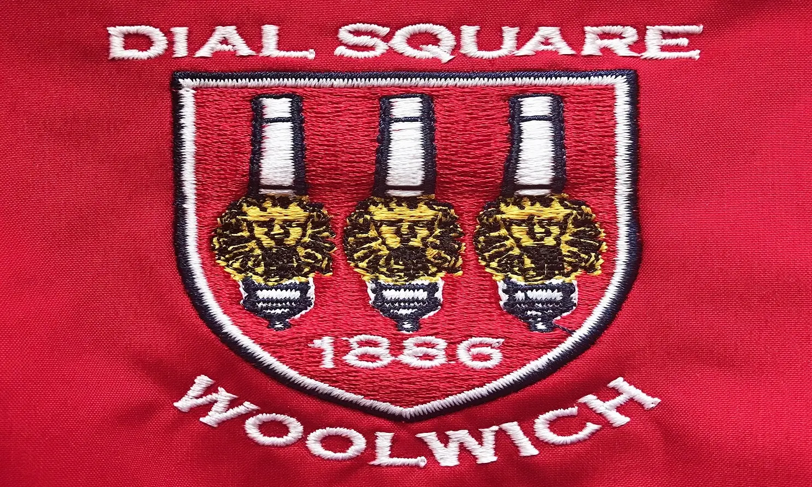

On September 16, 1937, arsenal hosted the first ever televised football match playing their reserve team.
5 interesting Facts about Arsenal
In the 1997/1998 season, Arsene Wenger became the first foreign manager to win the premier league title.
Arsenal was first founded in 1886 by munition workers in Woolwhich.

Arsenal was initially named as Dial Square by the munition workers which was then changed a month later to Arsenal.
Arsenal is the only team still in existence to not have been relegated in the premier league.